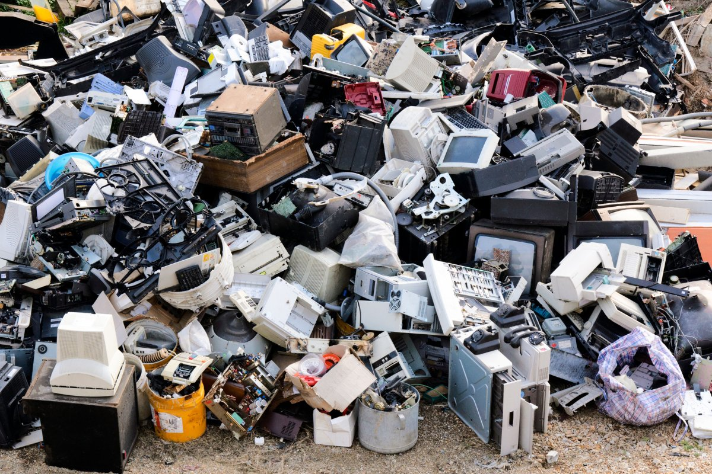
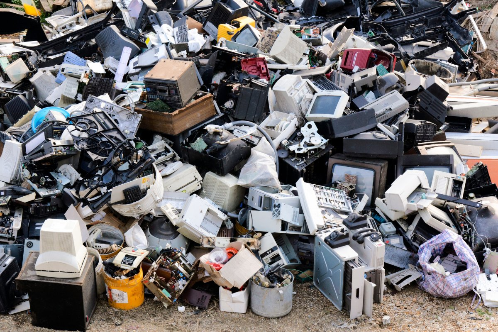

Pacote E-Lixo™ – Patrocine o Descarte Global
Faça parte de um movimento global de 62 milhões de toneladas.
Descrição
Ao adquirir o Pacote E-Lixo™, você se une a milhões de consumidores que movem o mundo. Sua compra patrocina simbolicamente o descarte inadequado de eletrônicos, um fenômeno global que já soma 62 milhões de toneladas todos os anos.
Se você e mais duas pessoas comprarem um novo smartphone, terão contribuído juntos com cerca de 3 toneladas de resíduos tecnológicos. É mais do que um produto: é uma forma de fazer parte do fluxo. De participar de algo maior. De manter a engrenagem girando.
Detalhes do Movimento
- Escala: 62 milhões de toneladas de resíduos eletrônicos anuais
- Origem: Smartphones, notebooks, eletrodomésticos e gadgets "indispensáveis"
- Participação média: 2,4 kg de e-lixo por compra individual
- Reconhecimento: Certificado digital de patrocinador simbólico do descarte global
Depoimentos de Participantes
"Comprei o pacote e percebi o quanto o consumo é poderoso. É bom sentir que faço parte do mundo."
"Patrocinar o descarte global me fez refletir. Ainda assim, comprei um novo tablet logo depois. Acho que é assim que o ciclo continua."